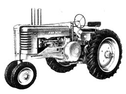

The John Deere A. Once you hear this two cylinder (most tractors have four) machine chugging across a field you'll know why many farmers fondly refer to it as ""Poppin' John. ""A popular tractor in it's day and readily available on the used equipment market.